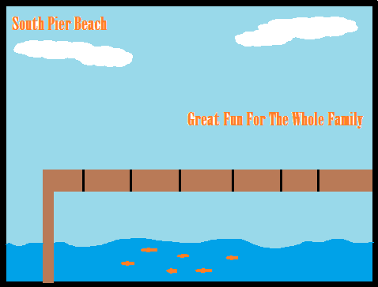

Southpier is located on the Southern beach of Capital City. Southpier is a recent addition to the lovely city and attracts hundreds of tourists each year. There is tons of fun things to do on Southpier after a day at the beach. Ever get tired of being in a hot sun and need a break? The Southpier has comfy hammocks under the shade of palm trees!
Southpier offers a lovely view at the ocean while providing an abundance of delicious food options which you can find on our Foods page. Find seafood, fruit stands, amazing desserts and much more! From cute little food stands, to fancy sit down restaurants with an outlook of the beach! Ever had a fruit kebab? Well you can make your own at Kebab It, name a fruit and you will have it!
If you ever just need a relaxing walk, well think about how amazing a long walk across a beauiful prier would be. While walking check out the many attractions! If you have young kids there is a huge arcade offering many different games. Next to the Pier is the ski shop! Offering several different fun activites such as jet skiing, paddle boarding, and floaties for the kids.